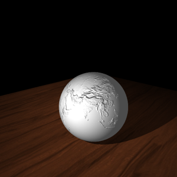
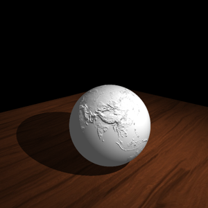
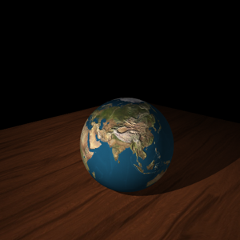
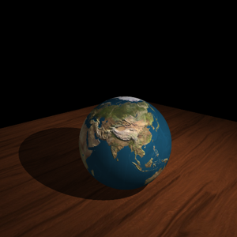
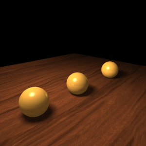
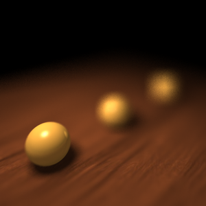
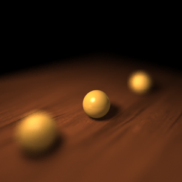
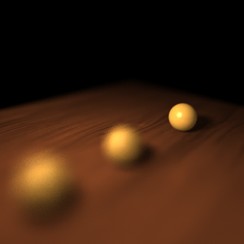
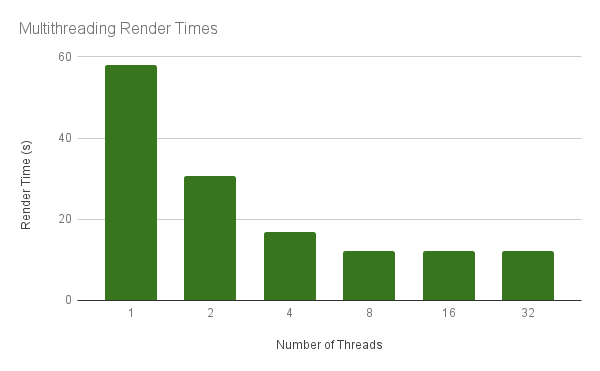

Ray Tracing
These are the images that I generated using the ray tracer I wrote as my final project for CS 488 (Introduction to Computer Graphics) offered at the University of Waterloo. I took the course in the Spring 2017 term with Professor Gladimir Baranoski.
My ray tracer needed to demonstrate ten distinct features, each referred to as an objective. They are listed below along with the generated image(s) that demonstrate the feature in question. Click on each image to enlarge it.
Objective 1 – Primitives – Cylinder and Cone
A cylinder and cone primitive were added. These can be arbitrarily transformed using hierarchical transformations.
{kind=link}
Objective 2 – Constructive Solid Geometry (CSG)
Using constructive solid geometry, primitives can be combined together using union, intersection, and difference operations. The primitives can be combined arbitrarily by composing the CSG operations together in a tree, allowing for creating complex models.
{kind=link}
{kind=link}
Objective 3 – Refraction
Refraction occurs when light travels between different mediums where it either slows down or speeds up, which results in interesting effects depending on the geometry of the primitive. Each primitive can be transparent, but the images below just show transparent spheres and cubes.
{kind=link}
{kind=link}
Objective 4 – Texture Mapping
Every primitive can be textured. Each face on the primitive can also be independently textured. Texture mapping is performed by mapping the surface intersection point on the primitive to UV coordinates, which are then mapped to the texture.
{kind=link}
Objective 5 – Bump Mapping
Bumps on a surface can be simulated by perturbing the surface normal according to a provided bump map. Then when lighting calculations are performed, shadows are cast on the surface to simulate roughness even though the surface itself is not deformed. Bump mapping can be combined with texture mapping to create more realistic looking objects.
   
{kind=link}
{kind=link}
{kind=link}
{kind=link}
Objective 6 – Anti-aliasing using Adaptive Supersampling
Without applying anti-aliasing techniques the generated images can look jagged, especially at low resolutions. However supersampling every pixel is expensive, especially when the pixel is not on an “edge”. Adaptive supersampling is performed by initially sampling each pixel 4 times and only performing more sampling if the colours of the four samples differ by some threshold amount.
{kind=link}
{kind=link}
{kind=link}
Objective 7 – Soft Shadows
Point light sources create harsh rigid shadows. To simulate the soft shadow effect given off by an area light multiple shadow rays are traced per intersection to random spots on the area light, with the result averaged.
{kind=link}
{kind=link}
Objective 8 – Depth of Field
Rays are normally cast from a single point. To simulate a depth of field effect rays can instead be cast from an area, which mimics a camera aperture. Rays can be made to all converge at a specified focal distance, which is where the image will appear to be in focus. The larger the aperture, the shorter the depth of field (distance where the image appears in focus).
   
{kind=link}
{kind=link}
{kind=link}
{kind=link}
Objective 9 – Glossy Reflection
Glossy reflection is simulated by randomly perturbing the reflected ray direction. The more glossy the object, the more a reflected ray can be perturbed. This gives a blurred reflection effect.
{kind=link}
{kind=link}
Objective 10 – Final Scene
All features (except depth of field) were combined to create this final scene. It depicts chemical ball-and-stick models for water and methane as well as a globe model.
{kind=link}
Extra Feature – Multithreading
Multithreading was added to decrease rendering times. The image is split into 25 x 25 pixel chunks, which are traced using the threads that are available.
The scene for Objective 1 was rendered at a resolution of 300 by 300 pixels using 1, 2, 4, 8, 16, and 32 threads. The time it took to render the scene was recorded and used to produce the chart below. This timing data was obtained on gl14 in the graphics lab.
